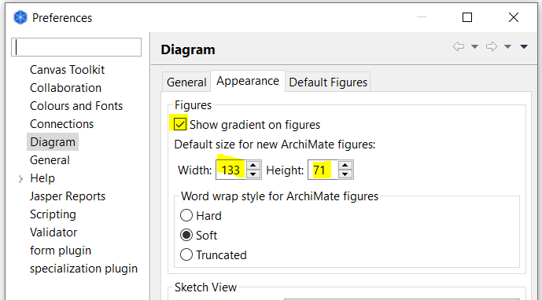
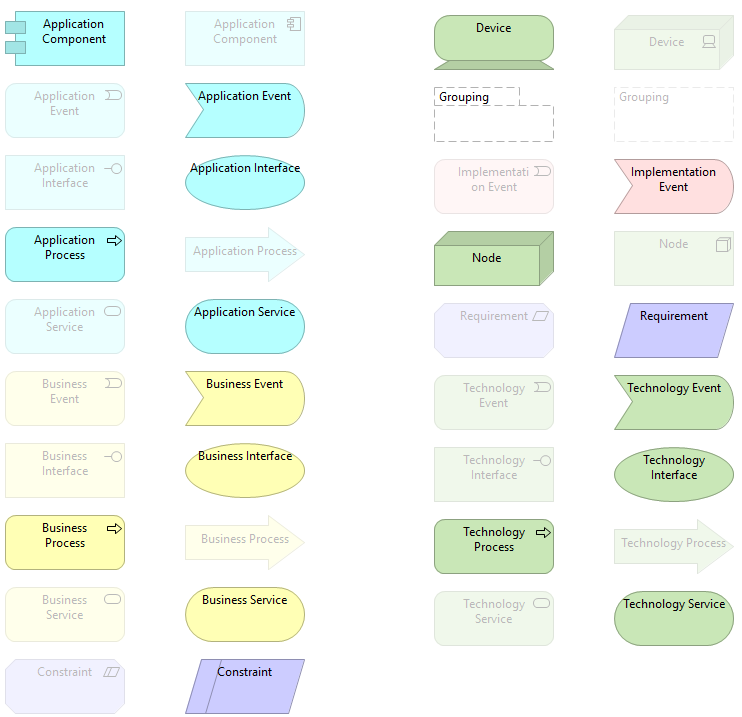
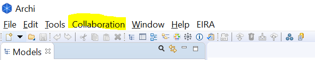
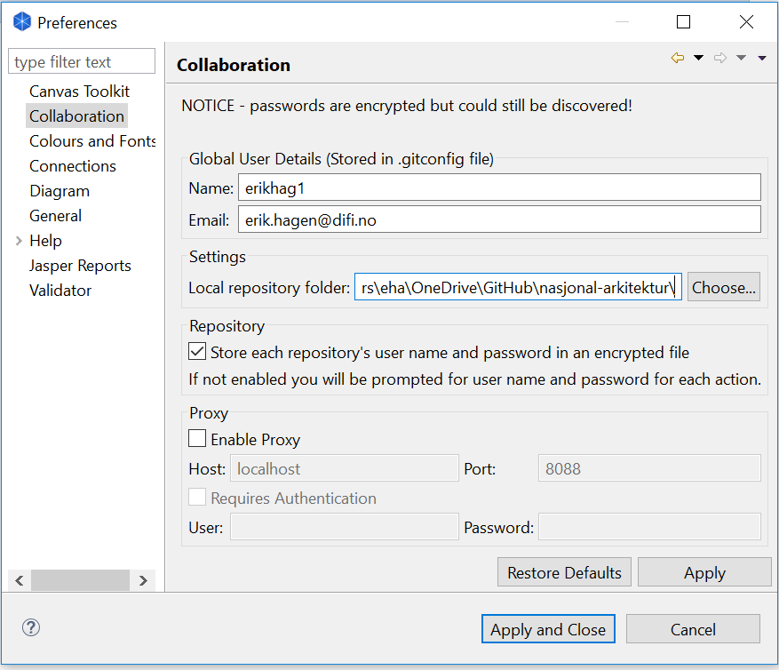
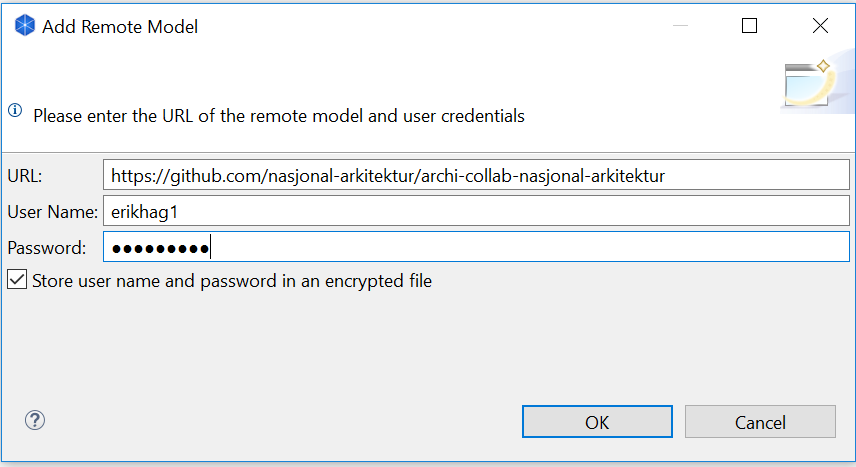
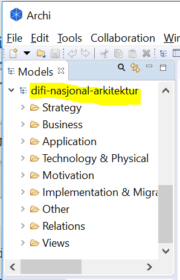
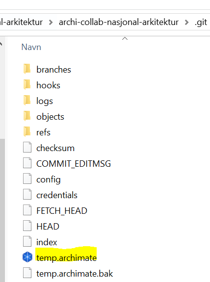

Nasjonalt arkitekturbibliotek er en plattform for samproduksjon og deling av arkitekturdokumentasjon i offentlig sektor, etablert av Difi i 2019.
1. Praktiske tips om fildeling på GitHub
Her gis praktiske tips om bruk av Github i tilknytning til arbeidet med Nasjonal arkitektur. Det gis tips om spesifikke verktøy, men hver enkelt står fritt til å velge andre alternativer.
1.1. Generelt
Git er en standard for versjonskontroll og lagring av kode og dokumenter. GitHub er en av flere skytjenester som støtter git, og er den tjenesten som er valgt av Difi. Det er i utgangspunktet gratisversjonen av Github som benyttes.
| Github ble oppkjøpt av Microsoft i 2018. |
Github kan brukes til å lagre vilkårlige dokumenttyper, men egner seg best til tekstbaserte dokumenter, dvs. dokumenter hvor kildeformatet er rå tekst. Det er dette git ble laget for, og da opprinnelig for versjonsstyring og samarbeid om kode (programvare).
Markupspråk som Markdown og Asciidoc lar deg skrive dokumenter i ren tekst, og egner seg tilsvarende godt for den funksjonaliteten som finnes rundt versjonsstyring i Github. Asciidoc er valgt her, fordi dette er lett å komme i gang med for nye brukere, samtidig som det gir avanserte muligheter for erfarne brukere. Asciidoc som kildeformat foretrekkes framfor f.eks. Microsoft Word, fordi det framstår som mer åpent og "prosesseringsvennlig". Se Praktiske tips on Asciidoc for mer informasjon.
Standard utvekslingsformater for modelleringsspråk som Archimate, BPMN, DMN og UML er også tekstbaserte, og egner seg for versjonsstyring i Github.
Nasjonalt Arkitekturbibliotek er organisert i en mappestruktur med undermapper for dokumentasjon av arkitekturer, løsninger, referansearkitekturer m.m.
I tillegg finnes seperate prosjektbiblioteker. Prosjektleveranser i form av dokumentasjon kopieres til "riktig" sted i strukturen under Nasjonalt arkitekturbiblitotek før prosjektslutt, mens arbeidsversjoner, møtereferater og annet prosjektspesifikt innhold tas vare på i prosjektområdet så lenge det er interessant.
Skriverettigheter til selve arkitekturbiblioteket er forbeholdt medlemmer av bibliotekredaksjonen. Tilsvarende er det kun prosjektmedlemmenene som vil ha skrivetilgang til hvert prosjekt-repository.
Andre som vil bidra med innhold kan gjøre dette ved å kopiere aktuelt GitHub repository (git Fork), gjøre endringer og så spille inn endringsforslag (git Pull Request). Redaksjonen for aktuelt GitHub-repository (arkitekturbibliotek eller prosjekt) vil så behandle endringsforslaget og eventuelt ta inn nytt eller endret innhold (git merge).
Merk: Git gir flere muligheter enn "fork" og "pull request" for å spille inn endringsforslag, men vi anbefaler inntil videre "fork" og "pull request" som nevnt.
1.2. Prosedyre for å komme i gang med git og Github
1.2.1. Opprett GitHub bruker
Dersom du ikke allerede har en GitHub-bruker, kan dette gjøres her.
1.2.2. Etabler lokal filmappe for kloning av github-filer
Lag en filmappe som hjemmeområde for å arbeide lokalt med github-filer, eventuelt med en undermappe for biblioteker (repos) fra Difi.
Eksempel 1: C:\Users\eha\OneDrive - Difi\GitHub.
Eksempel 2: C:\Users\eha\GitHub.
| Det fungerer å bruke Microsoft Onedrive i kombinasjon med Github. Fordelen med dette er at det blir lett å dele enkeltfiler og mapper med andre. Det fungerer også å bruke filmapper under din Windows-bruker som kun lagres lokalt (kan kanskje gi bedre ytelse og respons i brukergrensesnittet). |
1.2.3. Installer og konfigurer Git for Windows
Det antas her at du kjører Windows. Last ned og installer Git fra https://git-scm.com/download/win.
Her følger en kortfattet videre beskrivelse av på norsk; se eventuelt også Git-s egen dokumentasjon om Getting Started - First-Time Git Setup.
-
Sjekk at systemvariabelen HOME angir riktig filsti til ditt Git hjemmeområde (se over), eventuelt oppdater så verdien blir riktig.
En måte å sjekke dette på, er fra Windows kommandovindu (skrivebordsprogrammet Ledetekst) gjennom kommandoen set HOME.
Systemvariabelen kan legges til og endres gjennom Kontrollpanel, System, Avanserte systeminnstillinger, miljøvariabler. Eksempel: HOME=C:\Users\eha\OneDrive - Difi\GitHub.
-
Sjekk og oppdater Git-konfigurasjonen med riktig user.name og user.email.
En måte å sjekke på: Åpne et Windows kommandovindu (skrivebordsprogrammet Ledetekst) og kjør følgende to kommandoer: git config --get user.email og git config --get user.name.
En måte å endre på: Åpne et Windows kommandovindu (skrivebordsprogrammet Ledetekst) og kjør følgende to kommandoer: git config --global user.name "Ditt navn" og git config --global din-epostadresse. Det kan også gjøres gjennom annen Git programvare, som f.eks. GitHub Desktop (se nedenfor).
|
For spesielt interesserte: Om du bruker lange navn og dyp mappestruktur i Windows, kan du få problemer med en begrensning på 260
karakterer i total lengde på filnavn. I og med Windows 10 kan denne begrensningen oppheves. Se f.eks.
https://www.howtogeek.com/266621/how-to-make-windows-10-accept-file-paths-over-260-characters/ for en oppskrift på
hvordan dette kan gjøres. Kort fortalt: På Windows 10 Enterprise kan du kjøre gpedit.msc og endre Aktiver lange Win32 baner under Datamaskinkonfigurasjon, Administrative maler, System, Filsystem. Du må restarte eller logge av og på for at endringen skal tre i kraft. |
1.2.5. Generelt
Det finnes tre kategorier mennesker:
-
De som foretrekker grafiske brukergrensesnitt
-
De som foretrekker å skrive tekstkommandoer
-
De som ikke har anledning til å installere programvare
Anbefalinger for disse kategoriene er:
-
Bruk GitHub Desktop (enkel bruk) eller TortoiseGit (mer avansert)
-
Bruk Git Bash eller Git CMD (eller Windows CMD).
-
Arbeid direkte i nettleseren under https://github.com/difi/nasjonal_arkitektur , uten å klone til lokalt filområde; eventuelt bruk asciidoclive for asciidoc-dokumentasjon; ref. https://asciidoclive.com/edit/scratch/1
Alternativ 1: GitHub Desktop
GitHub Desktop er en mye brukt og god klient for å klone og oppdatere GitHub-biblioteker.
GitHub Desktop kan lastes ned her: https://desktop.github.com/.
Alternativ 3: Git Bash
Git Bash fås med siste versjon av Git for Windows her: https://git-scm.com/download/win
Generelle tips om å komme igang med Bash kommandolinke:
Alternativ 4: Asciidoclive
Ingen installasjon nødvendig. Se https://asciidoclive.com/edit/scratch/1.
| Bruke MS Internet Explorer eller MS Edge! Preview fungerer ikke i Chrome eller Firefox. |
1.2.6. Klon GitHub-prosjektet til din maskin
Kloning med GitHub Desktop
Om du bruker GitHub Desktop, kan det gjøres slik:
-
Åpne GitHub-biblioteket i nettleser, dvs. https://github.com/difi/nasjonal_arkitektur
-
Velg "Clone or Download" i GitHub og velg så "Open in Desktop".
-
I GitHub Desktop, velg File | Clone a repository og angi hvor filene skal legges på din harddisk, som omtalt under avsnittet om lokla filmappe ovenfor. Om du f.eks. benytter C:\Users\eha\GitHub\Difi, vil GitHub Desktop opprette C:\Users\eha\GitHub\Difi\nasjonal_arkitektur.
Kloning med Git Bash
TBD.
1.2.7. Gjør endringer
Gitt at du har skriverettigheter, kan du endre eksisterende filer, slette filer og tilsvarende for mapper. Når du gjør dette i et lokalt, klonet, repository, må du deretter synkronisere og eventuelt publisere dette før det blir tilgjengelig for andre.
1.2.8. Synkronisering og publisering av endringer
Synkronisering og publisering med GitHub Desktop
GitHub Desktop vil kontinuerlig polle og hente ned endringer fra GitHub til valgt Current Repository. Du vil også løpende se hvilke endringer du selv har gjort som foreløpig ikke er synkronisert tli GitHub.
For å publisere endringer med GitHub Desktop, må du først gi en Description, så trykke Commit to Master og til sist trykke Push to origin.
1.2.9. Mer avanserte temaer
Git Submodules
Git Submodules brukes for prosjektarbeid der en ønsker å tildele skriverettigheter til prosjektmedlemmene, noe som ikke uten videre er tilrådelig for hele arkitekturbiblioteket.
Annet
 I arbeid
I arbeid
2. Praktiske tips om redigering med Asciidoc
Asciidoc er et kildeformat for artikler og bøker som er tatt inn som gjeldende standard for Nasjonalt arkitekturbibliotek.

2.1. Bakgrunn
2.1.1. Om Asciidoc-formatet
Asciidoc er et mye utbredt format for å skrive artikler og bøker som ren tekst, med enkel "markup" for formatering og metadata som egner seg for prosessering og konvertering til ulike visningsformater, slk som html, pdf osv.
Et tekstbasert kildeformat som Asciidoc egner seg godt for versjonsstyring i git og gratis løsninger som github. Sammen med gratisverktøy for redigering og publisering, fås en brukbar gratisløsning for Nasjonalt arkitekturbibliotek som alle offentlige virksomheter uten videre kan bidra inn i, med minimal binding til spesifikke leverandører.
Blant altermativer som f.eks. Markdown, er Asciidoc valgt fordi det gir mer avanserte muligheter, samtidig som det er enkelt å komme i gang med.
Her er noen kilder til generell informasjon om Asciidoc:
2.2. Om teknologiene for html-publisering av Asciidoc-dokumenter
Asciidoctor er det programmet som (per 2018) brukes for å generere html5 for publisering av innholdet på nett. Dette inngår i en "verktøykjede" for publisering som plukker opp endrede kildefiler når disse oppdateres i github.
Se også tips om
2.2.1. Om Felles-mappen
Alle asciidoc-filer inkluderer maler og annet som ligger i en egen felles-mappe. Her finnes også en mappe med felles bilder og multimediafiler.
2.2.2. Om standard-header
Standardmalene inkluderes gjennom følgende include-setning:
include::../plattform_felles/includes/commonincludes.adoc[]
include::../plattform_felles/includes/commonincludes.adoc[]
Her finnes blant annet standardheader.adoc, som tar asciidoc-attrbutter som input og sørger for at det finnes et minimum av metadata, samt at det blir et ensartet utseende av overskrifter, innholdsfortegnelse m.m.
2.2.3. Om bibliotekets mappe- og filstruktur
Arkitekturbiblioteket er bygget opp med en struktur som tilsvarer det som er angitt i TOGAF 9.2 og Norsk arkitekturrammeverk for samhandling:
Dette er i utgangspunktet en dyp struktur med flere nivåer. Av praktiske grunner benyttes likevel en flat filstruktur, typisk med en en mappe per tema eller tilsvarende. Konvensjonen for navning av "logiske mapper" gjør at strukturen uansett framkommer når en benytter alfabetisk sortering på mappenavn.
Med unntak av bilder og multimediafiler (og noen fellesfiler), has altså kun ett nivå i mappestrukturen. I tillegg kan det angis metadata (keywords) for å søke etter og gruppere innhold.
Dette opplegget er et kompromiss mellom flere hensyn, herunder enkel oversikt og enkle filreferanser. Se eget avsnitt om adressering av bildefiler.
Resultatet er at det er enkelt å inkludere og gjenbruke de samme innholdselementene i ulike sammenhenger. En kan bruke asciidoc include statements og sette sammen "asciidoc-bøker". En kan også lenke relativt til asciidoc-filer uten å kjenne den absolutte url-stien, og en kan kryssreferere til kapitler eller andre tekstblokker på tvers av dokumenter.
| Når en inkluderer innhold fra andre mapper, er det lett å få problemer med adressering og visning av bildefiler. Se eget avsnitt om tips for adressering av bildefiler. |
2.2.4. Om forvaltning og kvalitetskontroll
Difi har utviklet løsninger for automatisert konsistenssjekking på tvers av alt innhold i biblioteket, blant annet for å sjekke gyldigheten av at lenker og include-paths.
| Disse og andre løsninger for operativ forvaltning av bibliotekinnholdet vil være i kontinuerlig utvikling. |
2.3. Tips om redigeringsverktøy for Asciidoc - kom i gang!
Det finnes flere brukbare verktøy for editering av Asciidoc. De fleste vil ha nytte av en editor som gir støtte til formatering og gir forhåndsvisnig av resultatet, men det er også mulig å benytte en ordinær teksteditor som f.eks. Notepad++ eller redigere tekst direkte i netleseren på Github.com.
Om du ikke har mulighet til å installere programvare på din maskin og ikke vil vente til du får hjelp av noen med administratorrettigheter, kan du forsøke å arbeide direkte i nettleseren under https://github.com/difi/nasjonal_arkitektur , uten å klone til lokalt filområde. Du kan alternativt bruke asciidoclive; ref. https://asciidoclive.com/edit/scratch/1
Anbefalt her:
-
AsciidocFX fungerer godt for editering av innhold på AsciiDoc-format, og støtter dessuten en rekke andre formater, inkl. Markdown. Last ned AsciidocFX_Windows.exe fra https://github.com/asciidocfx/AsciidocFX/releases/ og kjør denne filen for å insatllere. Arbeid så lokalt etter å ha klonet Github-biblioteket.
Merk: Oppstart av AsciidocFX kan ta litt tid, men fungerer ellers meget raskt. Html forhåndsvisning er umiddelbar og nær opp til det endelige resultatet (som Difi genererer med programmet Asciidoctor). Noen mindre bugs finnes, men programmet er i kontinuerlig utvikling.
Se også mer om AsciidocFX.
| Du står helt fritt til å bruke andre verktøy om du vil. |
2.4. Tips om publisering på web
Difi benytter per 2018 en løsning som plukker opp endringer i Github repository under https://github.com/difi/nasjonal_arkitektur og publiserer dette på https://doc.difi.no/nasjonal-arkitektur/.
| For at innhold i mapper som ikke er direkte lenket til eller inkludert som asciidoc-filer skal komme med, må det plasseres en tom fil ved navn .adocassets i mappen. Denne filen bør ligge i alle media-mapper. |
| Publiseringsløsningen krever at det ligger en fil ved navn main.adoc i alle mapper som skal kunne adresseres fra nettleser (tilsvarer index.html). |
| Du kan følge med på publiseringsprosessen på https://travis-ci.org/difi/nasjonal_arkitektur, der det også gi feilmeldinger og advarsler i tilknytning til aktuelle filer. Benytt dette aktivt for å sjekke dine publiserte filer for feil! |
2.5. Konvensjoner for bruk av Asciidoc
2.5.1. Generelt
Se https://asciidoctor.org/docs/asciidoc-recommended-practices/ for generelle anbefalinger fra asciidoctor.org.
Difi har i tillegg til dette etablert noen konvensjoner og maler i tilknytning til arkitekturbiblioteket som er ment å skulle forenkle arbeidet for hver enkelt, samtidig som en får et ensartet utseende og et opplegg for å vedlikeholde metadata, tekster på flere språk, m.m.
Det er ønskelig at disse konvensjonene følges. Enkeltstående Asciidoc-artikler eller -bøker som ikke følger konvensjonene, kan likevel inkluderes i biblioteket.
2.5.2. Metadata og attributter
Absolutt minimum metadata for (norske) asciidoc-filer er at det oppgis følgende:
lang: <no for norsk eller en for engelsk> doctitle: <dokumentittel>
Dessuten bør følgende attributter vurderes:
author: keywords: audience: difi_orig_language:
Forklaring: TBD.
2.5.3. Språkstøtte
Første linje i asciidoc-filen skal angi default språk. Angi :lang: no for norsk eller :lang: en for engelsk.
| Om "lang"-attributten ikke angis, antas engelsk. |
Det kan skrives tekstblokker i flere språk (engelsk og norsk) i samme fil. I så fall angis språk slik (eksempel):
ifeval::["{lang}"=="no"]
Blokk med norsk tekst...
endif::[]
ifeval::["{lang}"=="en"]
Block with english text...
endif::[]
Her vil uten videre kun ett av språkene vises, dvs. enten "Blokk med norsk tekst…" eller "Block with english text…".
Dette kan overstyres fra kommandolinjen ved generering av html (Asciidoctor attributter), slik at det f.eks. kan genereres en komplett samling av engelske dokumenter.
Ved oversettelse til annet språk, kan det angis hvilket språk det er oversatt fra. En kan da benytte attributten difi_orig_language.
Attributten difi_translation_status kan benyttes for å angi om oversettelsen er komplett (complete), delvis (incomplete) eller foreløpig manglende (missing eller bare -).
2.5.4. Kommentering
ifdef-direktivet kan brukes til å inkludere eller eksludere kommentarer fra visningen på en fleksibel måte.
Eksempel
Følgende Asciidoc…
:Eriks-kommentarer: ifdef::Eriks-kommentarer[] [red yellow-background]#Erik 2018-08-19: Er denne beskrivelsen god nok?# endif::[]
vil vise kommentaren slik
Erik 2018-08-19: Er denne beskrivelsen god nok?
Det eneste som behøves for å fjerne alle Eriks kommentarer fra visningen er å kommentere ut definisjonen av attributten (to skråstreker "//" først på linjen, dvs. "//:Eriks-kommentarer:").
2.5.5. Konvensjon for adressering av bildefiler
Bildefiler inkluderes i asciidoc gjennom et eget image-direktiv der adresseringen regnes relativt ut fra gjeldende setting av attributten imagesdir. Om denne attributten ikke er satt, eller eventuelt er resatt gjennom direktivet :imagesdir!:, tas mappen som den aktuelle asciidoc-filen ligger i son utgangspunkt.
Når bildefiler inkluderes indirekte ved at det inkluderes asciidoc-filer som igjen inkluderer images, kan adresseringen lett bli feil. En måte å sikre seg mot slike feil på, er å sørge for at den samme (relative) lenken er gyldig i begge tilfeller. Slik teknologien fungerer per 2018 er det nødvendig å adressere bildefiler relativt til en felles "rotmappe".
| Med en "flat" mappestruktur blir alle relative lenker til samme fil like uansett utgangspunkt (ett hakk opp og ett ned). Dette er en hovedgrunn til valget av flat mappestruktur for Nasjonalt arkitekturverksted. |
Gjeldende konvensjon er å bestandig adressere bildefiler relativt til felles "rotmappe" gjennom å gå "ett hakk opp og et ned", f.eks. slik:
image:../plattform_om-plattformen/media/asciidoctor-logo.png[width=80, height=80]
2.5.6. Navnekonvensjoner for filnavn
-
Unngå mellomrom.
-
Bruk gjennomgående små bokstaver.
-
Unngå norske karakterer (æøå).
-
Bruk bindestrek (-) for å skille ord i et filnavn eller en "logisk mappe" (se over om mappestruktur).
2.5.7. Filetternavn (extensions)
Bruk *.adoc for asciidoc-filer.
2.5.8. Mappenavn
Samme som for filnavn, men dessuten:
-
Bruk understrek (_) for å skille "logiske mapper" (se over om mappestruktur)
2.6. Maler
 I arbeid
I arbeid
3. Praktiske tips om samarbeid med Archi
Archi er et gratis og open-source verktøy som støtter Archimate-standarden for arkitekturdokumentasjon, og har tillegg som muliggjør samarbeid rundt felles repository på Github.

3.1. Generelt
Archi er gratis og i utbredt bruk både i Norge og internasjonalt. Det er derfor inntil videre valgt som samarbeidsplattform for arbeidet med Nasjonal arkitektur.
Dette betyr ikke at andre verktøy ikke kan brukes. Archi mangler endel funksjonalitet som finnes i mange andre verktøy, så integrajoner på tvers av ulike verktøy er aktuelt.
3.2. Archi repository på GitHub
Et felles Archi-repository for arbeidet med nasjonal arkitektur finnes på Github, her: https://github.com/nasjonal-arkitektur/archi-collab-nasjonal-arkitektur.
Gi beskjed til nasjonalarkitektur@difi.no om du ønsker skriverettigheter til dette biblioteket.
| I tillegg til dette biblioteket, finnes andre modeller som du kanskjeogså er interessert i. Se |
3.3. Installer og konfigurer Archi
-
Last ned og installer Archi
Last ned og installer siste versjon av Archi fra https://www.archimatetool.com/download/
-
Konfigurer "diagram appearance
Det er generelt ønskelig at de fleste symboler har samme størrelse, Standard symbolstørrelse settes slik at det er plass til 4 linjer med "litt lange ord"; se figur nedenfor. Dette holder for de fleste formål. Det velges videre å bruke gradienter i fargevisningen, fordi dette for mange oppleves som et mer "profesjonelt" uttrykk.
Figur: Konvensjon for konfigurasjon av symbolstørrelser og fargegradient
.
-
Konfigurer foretrukne Archi standardfigurer
Det er sterkt ønskelig å standardisere på symbolbruken. Archimate-standarden gir valgmuligheter som kan forvirre. Foretrukne standardfigurer konfigureres under menyen Edit | Preferences | Diagram | Default Figures. Benytt da valg som vist i følgende figur.
Figur: Konvensjon for konfigurasjon av default figures i Archi
| Archi har per januar 2019 begrenset funksjonalitet for dette. En har f.eks, ikke noen alternativer for Actor. En kan heller ikke benytte egne symboler. |
3.4. Installer og konfigurer Collaboration plugin
-
Skaff deg en GitHub-bruker
Du trenger en brukerkonto på GitHub. Dersom du ikke allerede har en GitHub-bruker, kan du skaffe deg det her.
Se eventuelt også praktiske tips om bruk av GitHub for annen informasjon om GitHub (ikke nødvendig her).
-
Last ned og installer Collaboration Plugin
Last ned og installer Model Repository Collaboration Plugin fra https://www.archimatetool.com/plugins/. Collaboration-menyen skal da komme til syne, slik:

-
Konfigurer Collaboration Plugin
Sett inn ditt git brukernavn (Name) og e-post (Email), og mappe-navnet (Local Repository Folder) der du ønsker at Archi skal legge filene når du importerer fra "Github-repoet".

3.5. Importer Github-repository
Velg Import Remote Model to Workspace fra menyen under Collaboration i Archi, og oppgi https://github.com/nasjonal-arkitektur/archi-collab-nasjonal-arkitektur som URL og oppgi ditt git brukernavn og passord.
Når du klikker OK, vil det bli opprettet en mappe ved navn archi-collab-nasjonal-arkitektur under den mappen du har satt opp under Preferences (se over).

Modell-vinduet i Archi vil vise difi-nasjonal-arkitektur som modellnavn:

3.6. Endring og synkronisering
De endringene du gjør blir ikke synlige for andre før du publiserer endringene dine. Det finnes flere valg i Collaboration-menyen for synkronisering. Tips:
-
Bruk Refresh om du bare vil laste ned endringer som andre har gjort (git pull).
-
Publish gjør både Refresh, Commit og Publish - alt i ett.
NB: Om flere jobber på de samme modellene samtidig, kan det bli behov for litt kompliserte "merge-operasjoner". Om du opplever problemer med dette, er det fint om du melder fra via en _issue i GitHub (eller per e-post til nasjonalarkitektur@difi.no).
3.7. Tips for å finne og gjenåpne en lukket Archi-modell lokalt
Collaboration-plugin oppretter en .git undermappe som ikke uten videre er synlig, der det blant annet ligger en temp.archimate fil. Det er denne filen som åpnes i Archi når du har importert biblioteket. Nyttig å vite dersom du f.eks. har kommet til å lukke modellen fra workspace i Archi før du har publisert endringene dine. Det er altså bare å åpne denne filen, så kommer den opp i Archi, helt tilsvarende "normale" Archi-filer og med samme innhold som klonet og eventuelt modifisert modell.

3.8. Archi scripts fra Difi for støtte til administrasjon og modellering
Difi har utviklet noen scripts for å effektivisere modellering og administrasjon av arkitekturbibliotek. Disse scriptene er gjort i jArchi med bruk av Archi-s Scripting Plugin, og krever installasjon av Archi-s Scripting Plugin for å kunne kjøres.
Se praktiske Archi scripts for mer informasjon om funksjonalitet og praktisk bruk av disse scriptene.
4. Praktiske tips om bruk av Zotero som felles referansebibliotek

Zotero is a free, open source, easy-to-use tool to help you collect, organize, cite and share research.
4.1. Introduction
We use Zotero for collaborative collection, sharing, commenting and citation of web resources. Zotero is easy to use, yet has some useful advanced features that can be usednin combination with other tools in our common toolbox.
4.2. Getting started
-
Installation: …
-
…
-
Norwegian getting started (UiO): https://www.ub.uio.no/skrive-publisere/referere/zotero/